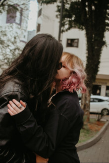

me aqui segue uma foto nossa, juntos (adoro essa foto)
Conforme o passar do tempo e dos dias, amar ela não se tornou apenas nos bons momentos, eu aprendi a amar ela com suas lagrimas e lábios vermelhos de quando você chora, olhar para os seus olhos e lábios no momento onde eles estiveram mais frágeis, tornaram sua aparência cada vez mais amável, a sua alma cada vez mais preciosa e o seu ser comigo cada vez mais único e colado comigo, perto de você triste eu não senti só medo, mas sim um sentimento diferente no qual me fez apaixonar por você na primeira vez que vi seus olhos derramarem em tristeza e medo, um sentimento com ar entrando em minha alma, deixando aquecida e sensitiva a tudo aquilo que os outros escolhem renunciar e evitar.
Bom já sabemos que até em momentos assim a capacidade dela se expressar é incrível, mas também não só nestes momentos que karol consegue ser incrível e amável, até em seus momentos onde as pessoas diriam que ela é egoísta ou grossa, consegue ser algum tão forte quanto demonstrar que tem algo, algo talvez ela não tenha certeza, mas que é o motivo de suas frustrações e raiva, nesses momentos não é raiva que me toma ou qualquer tipo de aversão, diferente das outras pessoas, quando isto ocorre com ela mexe com o meu eu de maneira diferente onde na qual o medo se mistura com preocupação, onde a compreensão vira uma ferramenta essencial, entender que muita de suas palavras e ações pareçam algo concreto e conciso com seus pensamentos, o ideal que só exite um preto e branco em relação a suas ações é totalmente ridículo, as entrelinhas disso conforme o tempo podem ser compreendidas de uma forma diferente. ... Nem sempre seu ódio quer dizer o, quer dizer... Está frase pode ser compreendia de formas diferentes, de forma que como o ódio e seus surtos são metamórficos assim como ela, a variação que muitos chamariam de (caótica) eu chamo curiosamente de sifônia dos sentimentos, não é a desordem que dita suas notas, a compreensão da música incrível que seu sentimento é vem das varições de volumes, de intensidade, de gravidade, embora ambas pareçam o mesmo agressivas em sua forma, nenhuma é igual e muito menos com a mês densidade. (muitos podem desistir de entender a complexidade das músicas com notas que geram revolta ou medo, mas bom, também sou uma música confusa, é nas suas músicas que eu encontro logica e uma ''confusão'' para amar).
eu amo a karol, muito.